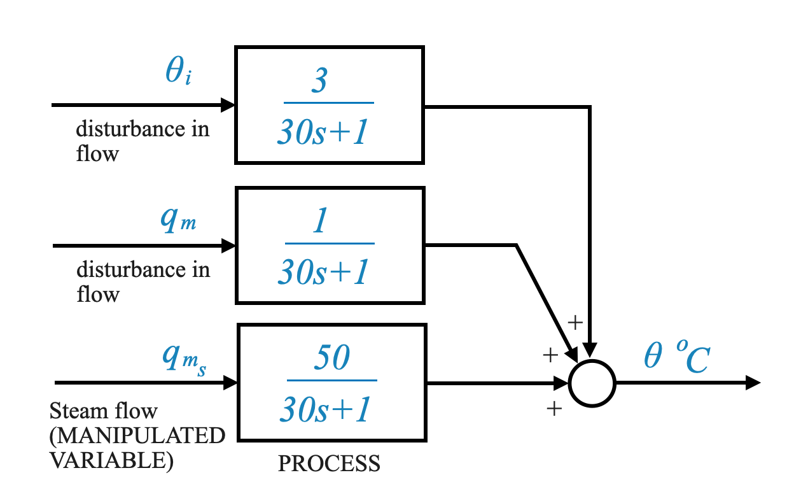
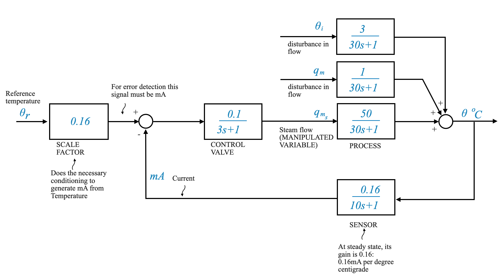
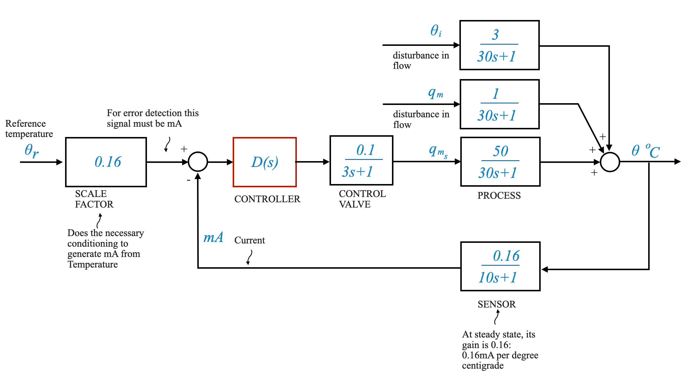

A Feedback Control System
Introduction
In our previous discussion, we delved into the realm of process control applications, with a specific cases involving the usage of DC and DC motors. In this notebook, we’ll revisit those core concepts and further expand our exploration with an in-depth look at another pivotal application - the heat exchanger.
Reviewing Process Control Concepts
Process control can be characterized by the regulation of certain variables. These variables include: - Temperature - Pressure - Liquid level - Composition
These applications are often influenced by factors with large time constants. Therefore, pneumatic devices, which inherently possess slower response characteristics, are well-suited for these applications.
Pneumatic Devices: A Recap
1. Control Valve
- Input: Electrical signal - Output: Pressure signal or control stem position alteration - Purpose: To regulate fluid flow to the process
2. Electropneumatic Transducer
- A device that interfaces between the actuator (control valve) and the electronic controller (which could be either Op-Amp based or digital computer-based). - Input: Electrical signal - Output: Pressure signal that is suitable for the control valve (actuator)
It’s worth noting that while I mentioned the electropneumatic transducer’s construction is quite identical in principle to an electrohydraulic device, we’re focusing on a block diagrammatic description for simplicity.
A Glimpse into the History of Process Control
Historically, controllers were positioned in a dedicated control room, separate from the process. This requires signal transmission from the process to the control room and vice versa.

Figure: Diagram showing the transmission of signals between process and control room
Prior to the 1950s, this communication was predominantly facilitated by pneumatic or air pressure signals. This method can still be witnessed in older industries with extensive tubing networks. However, as technology has evolved, newer industries have gradually adopted electronic or digital controllers, transitioning from pneumatic to electrical signals for communication.
Evolution of Transmission Standards in Process Control
In the realm of process control, particularly within industrial environments, the transmission of information between controllers, sensors, actuators, and other equipment is essential. Over the years, the standards and means of this transmission have undergone significant transformation.
- 1950s: The prevalent industrial standard for signal transmission was between 3 to 15 psi (pressure pounds per square inch).
- Post-1950s: A myriad of transmission standards emerged, such as ±10 volts, 1 volt to 5 volts, 1 milliampere to 5 milliamperes, and so on.
- Modern Era: Standardization has largely gravitated towards the 4 milliamperes to 20 milliamperes range for transmission purposes.
Pneumatic Transmission:
1. Pneumatic Signals (pre-1950s): Prior to the 1950s, communication between the control room and the process often used pneumatic signals. These are typically represented in terms of air pressure.
Standard: The industrial standard for these pneumatic signals was usually between 3 to 15 psi (pounds per square inch).
Infrastructure: Pneumatic systems required tubing for transmitting these pressure signals between devices. This tubing is why, when you’d visit older process industries, you’d see a web of tubes connecting different equipment.
Limitations: Pneumatic systems are generally slow to respond due to the physical nature of air or gas being compressed or decompressed. This makes them adequate for systems with large time constants but not for rapid-response applications.
Electronic Transmission:
2. Electronic Signals (1950s onwards): As technology evolved, electronic and electrical signals began to replace pneumatic transmissions.
Early Standards: Before an industry-wide standardization took place, there were several electronic signal standards like ±10 volts, 1 volt to 5 volts, and a variety of current signals like 1 milliampere to 5 milliampere.
4-20 mA Standard: This became the dominant standard for current transmission. It’s notable because a 4 mA signal can be used to indicate a system’s “off” state, while any value above indicates an “active” state. This ensures that even if the signal drops to its minimum (4 mA), it’s still detectable and distinct from a complete signal loss or a wire break.
Advantages: Electronic signals can be transmitted faster, with less energy loss, and over longer distances compared to pneumatic signals. Electronic systems are also less affected by environmental changes.
Digital Transmission:
3. Digital Signals (Late 20th century onwards): With the advent of computers and digital technology, digital signaling began to emerge in industrial control.
Microprocessor-based controllers: These controllers are capable of handling complex operations, supporting a variety of communication protocols, and interacting with modern digital infrastructure.
Protocols: Digital communication introduced a range of protocols like Modbus, PROFIBUS, and later, Ethernet-based standards such as EtherCAT and PROFINET.
Advantages: Digital signals are immune to noise and can carry a vast amount of data. They can be integrated with IT infrastructure, allowing for more sophisticated control, monitoring, and reporting mechanisms.
Implications:
The evolution from pneumatic to electronic to digital transmission represents not just a shift in technology but also in the complexity and capability of process control systems. Modern systems can manage multiple variables, integrate with other IT systems, and offer unparalleled control precision.
While the transition has enabled more advanced and complex systems, it also requires new skill sets for maintenance, integration, and troubleshooting. It’s essential for modern control engineers to understand not just the traditional aspects of their processes but also the digital communication and IT facets.
🤔 Pop-up Question: Why was the 4-20 mA standard adopted over other early electronic signal standards in the process control industry?
Answer: The 4-20 mA standard offers distinct advantages: 1. A 4 mA signal can indicate an “off” state, making it distinguishable from a complete signal loss or wire break. 2. Current signals like these are less affected by the resistance of long cables, ensuring signal integrity over long distances. 3. They are also less susceptible to electrical noise compared to voltage signals.
Signal Transmission Block Diagram
Imagine a typical process where a quantity (temperature, liquid level, or composition) is measured. This signal, once processed by a sensor, would be converted into an electrical signal. Most of these sensor outputs are voltage signals. But for transmission, these voltage signals are often converted into current signals, mainly because current signals are less susceptible to noise.

- Voltage to current conversion will be needed at the sensor point,
- Current to voltage conversion will be needed at the controller.
Signal Conditioning Circuit (or Transmitter)
Signal conditioning is a fundamental aspect of electronics and instrumentation. It refers to the process of modifying a signal in such a way that it meets the requirements of the next stage or device in a system. This process can involve amplification, filtering, converting, range matching, isolation, and any other functions that optimize the signal for further processing.
- This unit consists of signal conditioning and line driving components.
- Its role is to convert the sensor’s electrical signal into a format compatible with the controller, while also accommodating the distance between the process and the controller.
Note on Terminology
In process control language, the interface between the process and the controller is often termed as a “transmitter.” This word is used interchangeably with “sensor” throughout our discussion, but remember that in a broader context, the transmitter can include the sensor component as well.
Components and Types of Signal Conditioning:
Amplifiers: These are the most common signal conditioners. They boost the amplitude of a signal. For example, sensors that produce a very low output voltage (like thermocouples) often need amplification before their signals can be read by most analog-to-digital converters (ADCs).
- Operational Amplifiers (Op-Amps): Widely used in signal conditioning circuits due to their versatility. They can be configured for a range of functions such as inverting, non-inverting, differential, integrator, and differentiator circuits.
Filters: Filters are used to remove unwanted frequencies from a signal.
- Low-pass filters: They allow signals with a frequency lower than a certain cutoff frequency to pass through and attenuate frequencies higher than the cutoff frequency.
- High-pass filters: They do the opposite, attenuating frequencies below the cutoff frequency and allowing those above it to pass.
- Band-pass filters: They only allow signals within a certain frequency range to pass.
Analog-to-Digital Converters (ADCs): They convert analog signals into a digital format that can be processed by digital equipment like computers.
Voltage-to-Current and Current-to-Voltage Converters: These converters are useful for transmitting signals over long distances. For instance, the 4-20mA current loop standard in industrial settings.
Linearizers: Some sensors have non-linear outputs, meaning the relationship between the physical quantity being measured and the sensor’s output isn’t a straight line. Linearizers are used to correct these outputs.
Isolators: They are crucial in applications where it’s essential to break the electrical path between two circuits, yet still transfer the signal. They can protect sensitive equipment from voltage spikes and reduce ground loops.
Multiplexers (MUX): When several signals need to be sent through a single ADC, a multiplexer can be used. It selects one signal at a time to pass to the ADC.
Importance of Signal Conditioning:
Accuracy: Conditioning improves the accuracy of the final data by ensuring the signal is optimally prepared for processing.
Protection: By isolating signals, sensitive equipment can be shielded from potential damage due to electrical issues like surges or ground loops.
Compatibility: It ensures that signals from various sensors and sources can be made compatible with a wide range of processing and display equipment.
Enhanced Performance: Filters can help reduce noise, amplifiers can boost weak signals, and ADCs can facilitate digital processing.
Reliability: Proper conditioning can make a system more robust and reliable by minimizing the impact of electrical noise, interference, or other issues that might otherwise distort or degrade the signal.
Applications:
Signal conditioning circuits are ubiquitous in electronic systems. Some common applications include:
- Industrial Automation: Ensuring sensors’ signals are correctly processed for control systems.
- Medical Electronics: Enhancing signals from biomedical sensors.
- Communication Systems: Preparing signals for transmission or reception.
- Consumer Electronics: For example, in audio processing in radios or music players.
In summary, signal conditioning is about preparing a signal to be just right for its next stage of processing, ensuring the end data is accurate, reliable, and meaningful.
A Complete Application - Temperature Control System
With the foundational knowledge set, let’s explore a real-world application involving a heat exchanger.
Although we will only be discussing the temperature variable in this context, in a real industrial process, multiple variables might need to be controlled simultaneously.
Single Variable Control: The example of the temperature control loop illustrates a single-variable control system. In this scenario, the system focuses on controlling the temperature alone, assuming that flow rates are maintained by another control loop and disturbances are negligible.
Multi-Variable Control: In an actual process control environment, multiple variables (like temperature, flow, composition, pH value, etc.) might need simultaneous attention. The complexity arises because a change in one variable might affect others. For instance, the flow rate might influence temperature, or a change in composition might impact pH.
In the rest of the discussion, the assumption is that there might be more than one control loop but that each variable can be controlled independently.
A Closer Look at the Heat Exchanger
As an application, let’s consider a Temperature Control Loop that uses a heat exchanger.
The heat exchanger, as the name suggests, is a device that allows for the exchange of heat between two or more fluids without allowing them to mix. Maintaining an optimal temperature is crucial for ensuring both the efficiency and safety of processes in industries ranging from petrochemicals to food processing.
The objective of this segment is to get an in-depth understanding of the temperature control loop of a heat exchanger, from the physical setup to the mathematical modeling. We’ll kick off by understanding the hardware components involved, followed by deriving a mathematical representation of the system. Furthermore, through experimental methods, we will understand how to ascertain critical parameters that govern the system’s behavior.
Heat Exchanger Schematic:
The heat exchanger is depicted as a set of hollow tubes. The process fluid (whose temperature we aim to control) circulates through these tubes, entering at a specific point and exiting at another.

At a high level, a heat exchanger consists of hollow tubes through which a process fluid passes. This fluid enters at a certain temperature (inlet temperature) and exits at another (outlet temperature). Our primary goal is to control the temperature of this fluid as it exits the tubes.
However, remember that we’re focusing solely on the temperature control loop. In a real-world setting, multiple variables might need control, and there would be various control loops in place. Each loop could control variables like temperature, flow rate, composition, pH, etc. For simplicity and clarity, we’re isolating one control loop – the temperature control loop – assuming minimal interference from other control loops.
Heat Exchanger Detailed Walkthrough
The heat exchanger we’re examining comprises hollow tubes. The process fluid, whose temperature we aim to control, circulates through these tubes.

The fluid enters with an inlet temperature (denoted as \(\theta_i\), a perturbation from the desired steady-state value) and exits at another temperature (denoted as \(\theta\)).
The core objective is to ensure that the fluid exits at a specific commanded temperature, irrespective of any disturbances.
From the steam the heat is stripped off and we have condensate coming out. Steam, when used as a heating medium, releases heat by condensing (changing its phase from vapor to liquid). As steam gives up its latent heat of vaporization, it turns back into water, which is termed “condensate.” The process of steam condensation releases a significant amount of heat, which is used for heating purposes in various applications.
Let’s denote: - $ $: Perturbation from the desired temperature value in \(^oC\). - $ i $: Perturbation in the inflowing temperature relative to the steady-state value - $ q_m $: Perturbation in the flow rate relative to the steady-state value. The perturbation in the flow rate can affect the temperature. - $ q{ms} $: is the perturbation in the steam flow. This is our manipulated variable which we will control using a controller that acts on the valve to reduce \(\theta\) to zero.
We are not considering how to control of the flow rate, but we need to consider it because the perturbation in the flow rate will be a disturbance for our system.
Note that we are discussing perturbations with respect to the steady state. This means that the objective of the control will be to reduce $ $ to zero.
🤔 Pop-up Question: In which era did the industrial standard for signal transmission shift towards 4 milliamperes to 20 milliamperes?
- 1950s
- 1960s
- Modern Era
- Before 1950s
Answer: c) Modern Era

- The actuator is a control valve which is pneumatically operated. Since the output of the controller (e.g, a digital computer or analog electrical device) we need an interface between the output of the controller and the actuator. This is why we need the electropneumatic transducer.
SideBar - Electropneumatic transducers
An electropneumatic transducer, often referred to as an “I/P converter” (Current-to-Pressure) or “E/P converter” (Electrical-to-Pneumatic), is a device that converts an electrical signal, usually a current or voltage, into a corresponding pneumatic output, typically in the form of air pressure.

More specifically:
Input Signal: The most common input signal for I/P converters is the standard 4-20 mA current loop, though some models accept voltage signals like 0-5V or 0-10V.
Output Signal: The output is typically a pneumatic signal ranging from 3-15 psi (pounds per square inch), though other ranges like 3-27 psi or 6-30 psi are also possible, depending on the device and application.
Working Principle: Internally, the electropneumatic transducer uses a solenoid, a flapper/nozzle mechanism, or other electronic components to detect the incoming electrical signal. This signal is then used to control a pneumatic valve mechanism that modulates the output air pressure.
Applications: Electropneumatic transducers are widely used in industrial control systems. They allow electronic control systems to interface with pneumatic actuators, valves, and other devices. For example, a PLC (Programmable Logic Controller) might use an I/P converter to control a pneumatic valve in a process plant. By sending different current values to the I/P converter, the PLC can open, close, or partially open the valve, depending on the required process condition.
Advantages:
- Safety: Pneumatic systems are inherently safer in certain explosive or flammable environments. By using an I/P converter, electronic control systems can safely interface with pneumatic devices in such areas.
- Integration: They allow for easy integration of electronic and pneumatic systems, enabling more versatile and comprehensive control strategies.
Considerations: It’s essential to ensure that I/P converters are correctly calibrated, free from external vibration, and have a clean supply of air. Contaminated air or moisture can impact their performance or cause them to malfunction.
In short, electropneumatic transducers play a crucial role in bridging the gap between electronic control systems and pneumatic actuation, enabling precise control in a variety of industrial applications.
— END OF SIDEBAR
Deriving a Mathematical Model - Building a Block Diagrammatic Description Using Experimental Methods
We are poised to formulate the comprehensive mathematical model for our Temperature Control System.
Just as we previously leaned on physical principles for equation derivation, experimental methods can also be employed for model identification. By conducting experiments, we can discern the transfer function models of distinct components, thereby enabling the creation of the mathematical model for the whole system.
Identifying the Process Parameters:
Let’s start from the Plant, the Process itself.
Let’s assume that the process can be approximated by a first-order system:
\[ G_p(s) = \frac{K_p}{\tau_p s +1} \]
- Let’s assume that the parameters $ K_p $ and $ _p $ of our model can be determined experimentally.
- Suppose the steam flow rate $ q_{ms} $ is $ A $ kilograms per second. This will be considered as our input:
\[ q_{ms} = A\;\; kg/sec \]
Output Curve Representation:
When this specific input is given, the experimentally obtained output can be plotted as $ $ versus $ $. The resultant curve might resemble that of a typical first-order process.

From the steady state of this curve, we can denote $ _{ss} $ as the experimentally obtained steady state value. We can establish:
\[ K_p = \frac{\theta_{ss}}{A} \]
Second, considering the transfer function, our goal is to determine the time constant. By analyzing the transient of this process reaction curve (or response curve), we can model it as:
\[ \frac{\theta(s)}{Q_{ms}(s)} = \frac{K_p}{\tau_p s + 1} \]
For a unit step input or for an input of magnitude $ A $:
\[ \theta(s) = \frac{K_p \cdot A}{s(\tau_p s + 1)} \]
Taking the inverse Laplace transform, we get:
\[ \theta(t) = K_p \cdot A (1 - e^{-\frac{t}{\tau_p}}) \]
From which, it follows (given than $ K_p A = _{ss}$):
\[ \theta(t) = \theta_{ss} (1 - e^{-\frac{t}{\tau_p}}) \]
Considering the slope at $ t = 0 $, we get:
\[ \frac{d\theta}{dt} \Big|_{t=0} = \frac{\theta_{ss}}{\tau_p} \Big|_{t=0}\]
This slope helps us understand the process reaction curve further.

This graphical representation facilitates the experimental determination of $ _p $. Consequently, we can represent our process transfer function $ G_p(s) $ as:
\[ G_p(s) = \frac{K_p}{\tau_p s + 1} \]
and with a simple experiment we can identify \(K_p\) and \(\tau_p\).
An Industrial Example:
Consider a heat exchanger experiment. The identified parameters were $ K_p = 50 $ and $ _p = 30 $, giving us the model:
\[ G_p(s) = \frac{50}{30s + 1} \]
Remember, this model is valid when the temperature $ $ is the output and the steam flow rate is the input. It’s essential to recognize that other inputs, like disturbances in the process, can influence the process. For our heat exchanger, the disturbances are \(q_m\) (disturbance in the process flow rate), and \(\theta_i\) (disturbance in the temperature of the process fluid inflow).
The other transfer functions can also be experimentally determined. For instance:
\[ \frac{\theta(s)}{Q_m(s)}: \frac{1}{30s + 1} \]
This means, that the gain is \(1^oC\) per \(Kg/sec\) of the input. The time constant is \(30\) sec. This in fact is the process time constant so it is what we identified before.
\[ \frac{\theta(s)}{\theta_i(s)}: \frac{3}{30s + 1} \]
This represents when the input is a variation in temperature. The gain is, in this case \(3^oC\) of output per each degree centrigrade in the input. The time constant is \(30\) sec. This in fact is the process time constant so it is what we identified before.
The Electropneumatic Transducer and Control Valve:
Next, we explore the Electropneumatic Transducer combined with the Control Valve. The transducer takes current as input and produces pressure as output. With a range of 4 to 20 milliamperes for current and 3 to 15 psi for pressure, the transducer gain is $ $ psi per milliampere (assuming that the device is linear in the range under consideration):
\[ K_T = \frac{15-3}{20-4} = \frac{12}{16}\;\; \text{psi/mA} \]
Considering the control valve, a pressure of 3 to 15 psi leads to a flow output. For our system, the maximum flow is 1.6 kilograms per second (we have determined this, for example through experiments), leading to a control valve gain of $ $ kilograms per second per psi.
\[ K_V = \frac{1.6-0}{15-3} = \frac{1.6}{12}\;\; \text{kg/sec per psi} \]
When both units are taken together, we get the combined gain $ K_v $ as 0.1 kilograms per second per milliampere.
\[K_v = \frac{12}{16}\cdot\frac{1.6}{12} = 0.1\;\; \text{kg/sec per mA}\]
If the time constant of the Electropneumatic Transducer and Control Valve can be neglected than this can be my entire model.
Depending on the dynamics of the Electropneumatic Transducer and Control Valve and their relationship with the Process, we can represent their transfer function as:
\[ G_v(s) = \frac{0.1}{3s + 1} \]
Note that in this case, experiments with the Electropneumatic Transducer and Control Valve have given a time constant of 3 sec.
If you think 3 sec is negligible relative to 30 sec than you can consider the simpler gain only model.
The Sensor Model
When thinking about the sensor, we should consider its input and output. In our system: - Input: Temperature (\(^oC\)) - Output: Milliamperes (mA)
So, for the temperature control system we’re designing, we need to define the temperature range. For a typical application, this range is between 50°C to 150°C. Accordingly, the sensor’s output will range from 4 to 20 mA.
🤔 Pop-up Question: What do you think will happen if the temperature goes below 50°C or above 150°C?
Answer: The sensor may not provide accurate readings, or it may operate outside its specified range, potentially causing inaccuracies or even damage.
With the above information, we can determine the sensor’s gain by observing its linearity over the defined range. Given:
\[ \text{Output range} = 20 \text{mA} - 4 \text{mA} = 16 \text{mA} \]
\[ \text{Input range} = 150°C - 50°C = 100°C \]
The sensor gain (K) is given by:
\[ K = \frac{\text{Output range}}{\text{Input range}} = \frac{16}{100} = 0.16 \]
Thus, the unit for the sensor gain is milliamperes per degree centigrade (mA/°C).
However, merely considering the sensor’s gain might not give us the entire picture. Often, in real-world applications, the dynamics of the sensor can’t be ignored. Especially in scenarios where the sensor has an appreciable time constant. For instance, in our case, the sensor has a time constant of 10 seconds. Given the process time constant of 30 seconds, neglecting the sensor’s dynamics would be a poor approximation.
It’s essential to remember that considering only a zero-order model (only gain) won’t suffice in systems with significant time constants.
Conducting a similar experiment for our sensor, let’s represent its transfer function, H(s), as:
\[ H(s) = \frac{0.16}{10s + 1} \]
This represents a first-order factor for our sensor.
Complete System Model
With the above information, we can construct a comprehensive block diagram for our temperature control system.
(Insert Diagram here)
In the diagram, Gp(s) is the process transfer function, given by:
\[ Gp(s) = \frac{50}{30s + 1} \]
The disturbance transfer functions, which consider factors like changes in the inlet temperature (theta i) and changes in the flow rate of the inflowing fluid (q m), are:
\[ \frac{1}{30s + 1} \]
\[ \frac{3}{30s + 1} \]
Now, let’s think about the control valve. Its transfer function, as determined earlier, is:
\[ \frac{0.1}{3s + 1} \]
In this system, our objective is to make the output temperature (theta) follow a particular command. The challenge lies in converting the command signal, given in temperature, to a corresponding current in milliamperes for error detection.
It’s crucial to understand that for effective error detection, the command signal and the sensor’s output must be in the same unit (mA).
Given that the sensor’s steady-state gain is 0.16 mA/°C, it makes sense to choose a scale factor of 0.16 for our system. This ensures that at steady state, the commanded signal’s value (in mA) matches the sensor’s output, facilitating effective error detection.
Wrapping Up
The values we’ve discussed pertain to a typical industrial process. However, with the methodology we’ve outlined, it’s possible to apply this to any situation. By identifying various transfer functions experimentally, we can construct a comprehensive model of the system.
To further refine our system, we can introduce a controller, \(D(s)\), in the loop. The design of this controller is crucial to ensure the output \(\theta\) (temperature of the outflowing process fluid) follows the command (\(\theta_r\)), despite any disturbances acting on the process, \(\theta_i\) (change in inlet temperature) and \(q_m\) (change in the flow rate of the inflowing fluid).
🤔 Pop-up Question: Why is it crucial to ensure that the sensor’s output and the command signal are in the same unit for error detection?
Answer: If they’re in different units, the comparison would be meaningless. It’s like comparing apples to oranges. Having them in the same unit ensures that any difference (error) between them accurately represents the deviation of the system from its desired behavior.
Why 0.16 as the Scaling Factor?
Given the context:
Sensor’s Behavior: The sensor in our system translates temperature into a current signal, producing an output in milliamperes (mA). The sensor’s steady-state gain, which indicates how much the output changes for a given change in input, is 0.16 mA/°C. In simpler terms, for every degree Celsius increase in temperature, the sensor’s output increases by 0.16 mA.
Objective of Feedback Control: In our feedback control system, the goal is to make the process output (temperature) follow a reference or command signal. The error detector then compares the sensor’s output (a mA value) with this reference signal.
Unit Consistency: The comparison in the error detector requires the two signals to be in the same unit. Since the sensor’s output is in mA, the reference signal (which is a desired temperature) needs to be converted into its equivalent in mA.
Matching the Sensor’s Behavior: To ensure the reference signal in mA correctly represents the desired temperature, it’s logical to use the sensor’s steady-state gain as the scaling factor. When we desire a particular temperature as our reference, multiplying it by 0.16 (sensor’s gain) gives us the exact current value that the sensor would output at that temperature.
An Illustrative Example
Suppose you set a reference temperature (\(\theta_r\)) of 100°C. To convert this into a reference current for comparison:
\[ \text{Reference current} = \theta_r \times \text{Scaling Factor} \]
\[ \text{Reference current} = 100°C \times 0.16 \text{mA/°C} = 16 \text{mA} \]
So, when the process achieves 100°C, the sensor would ideally output 16 mA. The error detector would then see zero error between the reference current (16 mA) and the sensor’s output (16 mA), indicating the system is operating at the desired condition.
In conclusion, using the sensor’s steady-state gain as the scaling factor ensures that the error detector compares apples to apples. This is vital for the proper functioning of the feedback system, ensuring that the control actions are based on meaningful comparisons.
— END OF SIDEBAR
In the next notebooks, we’ll explore the intricacies of controller design and understand how to tailor it to our specific needs. This will ensure that our temperature control system operates optimally under various conditions.